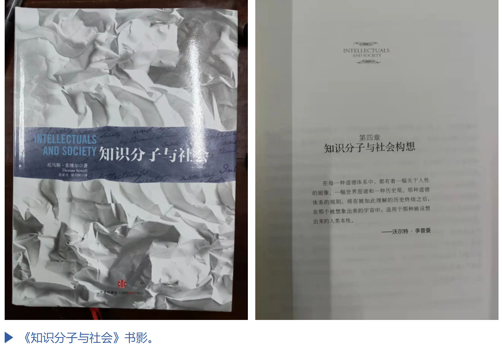
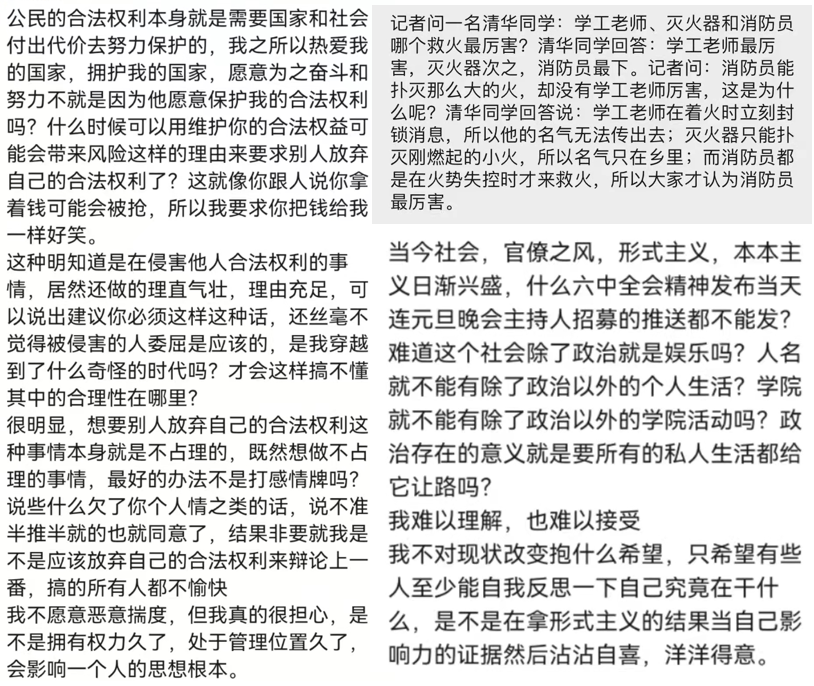
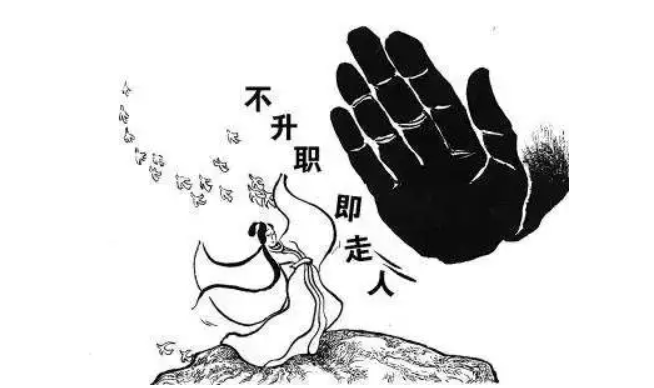

此文事实上是一篇书籍推荐。Thomas Sowell的《知识分子与社会》一书中提出的最重要的概念之一，便是知识分子对于社会政治问题的两种普遍态度——“被圣化的构想”（the vision of the anointed）和“悲观构想”（the tragic vision）。下文我将展示如何使用该观点去思考一些社会问题。


近来时常看到有朋友公开痛批一些不合理的现状：疫情期间行政组织的“一刀切”与“不作为”、两会期间人大代表荒谬绝伦的提案、高校负面新闻的传播被校方压制、正常的文娱活动被政治宣传干预等等。由此，一些思想较为激进的朋友甚至得出了“否定当前的政党制度”的结论。这些朋友大声疾呼：“保护我们的合法权利！”
我很理解并很钦佩这些朋友们。这些朋友所表达出来的意思，是知识分子们共同的心声。但是，在表达这些观点的时候，我们有没有认真考虑过这样一个问题：造成这种现状的根源在哪里？有些朋友会将问题归咎于当前中央的领导政策，以至于整个政治制度本身。有些朋友会认为问题不是出在中央的领导，而是出在地方（基层）行政机构。另有些朋友则直接将原因归罪在人类这个物种自身的弱点和局限性。众说纷纭。
美国经济学家Thomas Sowell在他《知识分子与社会》中总结了这个问题的答案，并归纳成了知识分子对于社会政治问题的两种普遍态度——“被圣化的构想”（the vision of the anointed）和“悲观构想”（the tragic vision）。持“被圣化的构想”的知识分子认为：会中存在着由现有机制所制造出来的“问题”，而知识分子能够研究出针对那些问题的“解决方案”——他们的深刻洞见能够把人们从不必要的社会束缚中解放出来。卢梭的著名论断“人生而自由，但无往不在枷锁之中”，总结了“被圣化的构想”的核心理念，即社会机制是人类不幸福的根本原因。这也表明了一个事实：我们身处其中的这个世界，远远不同于我们想看到的世界。
与这一构想相互冲突并已经共存了几个世纪的另一个构想就是“悲观构想”。这个构想认为人类的内在缺陷是最基本的问题，社会文明仅仅是努力克服人性问题的不完善方法，这些不完善本身也是人类内在缺陷的产物。这便是修昔底德所描绘的“黑暗图景”（the darker picture）：“人类极为艰难地保留着文明的薄纸，以借助于脆弱的文明来逃离混乱与野蛮状态。在谦虚和谨慎的基础上，人类从经验中不断成长。”它完全不同于“被圣化的构想”。
我们不妨举几个例子来说明这个问题。比如，我们都知道财务报销或者合同盖章很难——它的手续安排得很繁琐，报销者也需要准备很多的材料说明，这给工作与科研都带来了很大的麻烦。因而这种行政体系总被指责为“不作为”、“效率低下”。问题在哪里呢？是在于行政制度的不合理，还是在于人性利己的弱点呢？这两种原因仿佛都有道理——制度太严格，就给民众带来麻烦与苦恼；而制度太宽容，则总有利己主义者去“钻空子”、去破坏制度。
又比如，我们常痛批官僚主义的一个典型弊病是“行政人员媚上欺下”。但是这种“媚上欺下”的心理到底是由社会制度的不完善所致，还是因为人性本来就是如此呢？抑或是兼有之？
还有一个更典型的例子——世界对于消除经济和社会的不平等这一目标的讨论。Thomas Sowell指出，在这种有关意识形态问题的讨论中，“被圣化的构想”和“悲观构想”分别形成了“左派”和“右派”的观点。例如，今天政治左派的构想是：由政府直接制定决策作用其上，或至少用这一目标来将集体的决策制定合理化。右派则相反，主张自由市场的自由主义者并支持军政府。当然，“左派”和“右派”的区分并不是截然的，而是存在一系列的过渡形态——从最极左的共产主义者，延伸到不那么极端的左翼激进分子，延伸到更加温和的自由主义者，延伸到中立派，再一直延伸到保守主义者、强硬的右派以及极端的法西斯主义者。事实上，每一个理性的当权者都要反复思考这样一个问题：政府应该多大程度地去干预市场经济（乃至思想文化），才是对政府本身和对社会各阶层都更有利的？——如果过度干预，市场就没有活力，人民无法过上幸福的生活；如果过度自由，市场就危机四伏，广大人民还是无法过上幸福的生活。
事实上，上述这些矛盾从现代政治制度诞生以来，就一直没有得到很好的解答。目前对于这些问题的解答多取决于政府的立场——例如，如果政府更倾向于认为少数利己主义者造成的破坏性后果更严重，那就会更严厉、更保守地实施现有行政制度；如果政府更倾向于认为自身更代表的是资产阶级而非无产阶级，那就会优先采取资本主义而非社会主义。由于社会各阶层的利益总会存在冲突与矛盾之处（甚至每个人自身的某些利益就相互矛盾），因而每种立场都总是倾欹的——站在某一立场上行动，总会造成一部分人更幸福，而另一部分人更不幸福。我们总找不到一种让所有阶级的人都幸福的方案——除非找到一种完美的政治制度，或者克服掉人性的所有缺陷。
尽管如此，我们也没必要彻底悲哀。知识分子朋友们对自身利益的积极诉求与抗争，实在也是一种可嘉的行为——这是人出于生物学上的本能。只不过，我们在对社会现状进行批判时，最好要多思考、多调研一下造成这种现状的原因是什么？是出在社会制度本身，还是出于人性的缺陷？只有明确了原因，才能具体找到对症下药的良方，才能更好地督促当权者对政治制度的不断改革。

近来，考核高校教师的“非升即走”（tenure-track）制度近来引发了相当大的争议。实施“非升即走”制显著地提高了高校教师的科研素质，但也造成了教学质量的下降和教师心理压力的升高。严格的考核制度，总被高校沦为“剥削劳动力”的工具，对教师不利；而宽松的考核制度，则容易助长高校教师“混吃等死”的生活惰性，对高校不利。如何在这两者之间取一个平衡点？目前还没有人能回答这个问题。